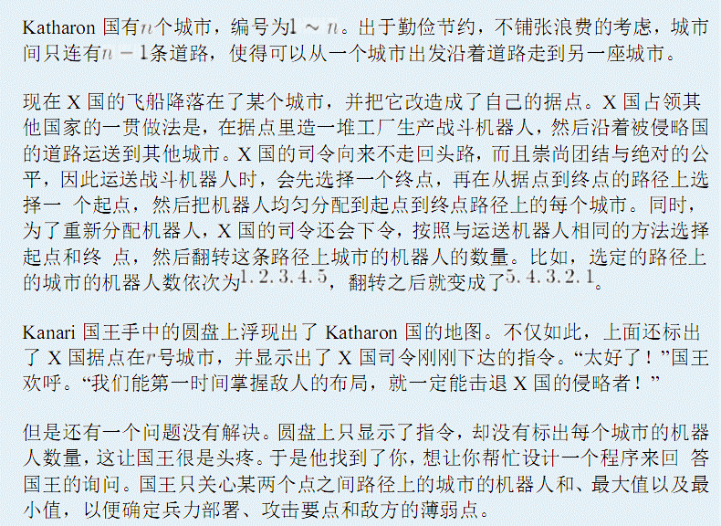
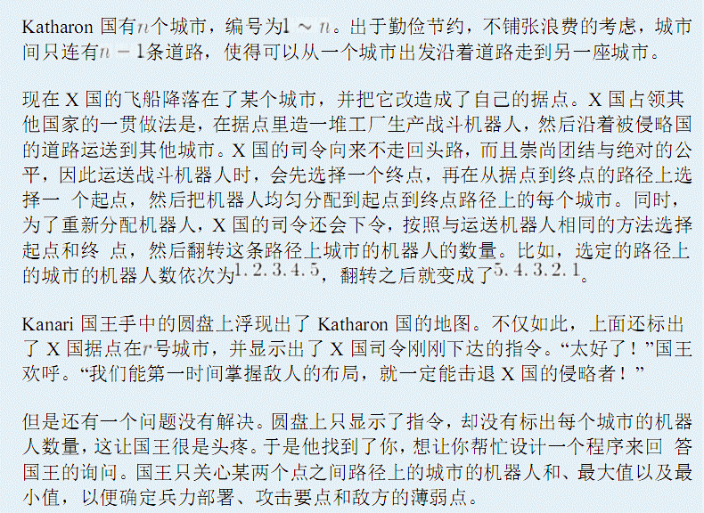

| F.A.Qs | Home | Discuss | ProblemSet | Status | Ranklist | Contest | 入门OJ | ModifyUser Xeonacid | Logout | 捐赠本站 |
|---|

第一行有三个整数N、M和R，分别表示树的节点数、指令和询问总数，以及X国的据点。
接下来N-1行，每行两个整数X和Y，表示Katharon国的一条道路。
接下来M行，每行描述一个指令或询问，格式见题目描述。
对于每个询问操作，输出所求的值。
1<=N,M<=50000.且对于运送操作1<=W<=1000